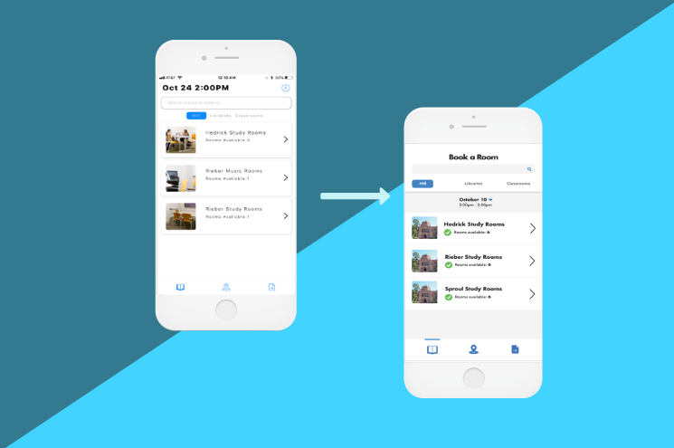
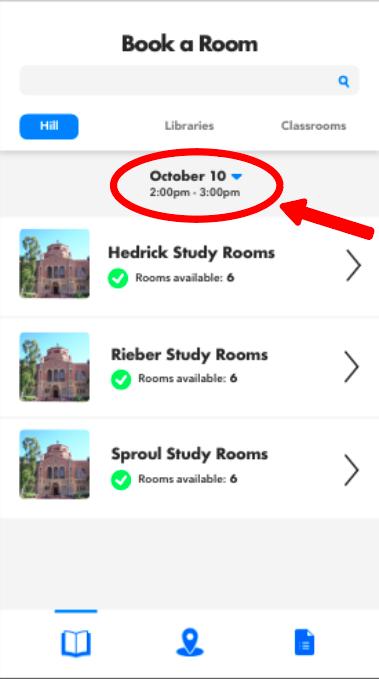
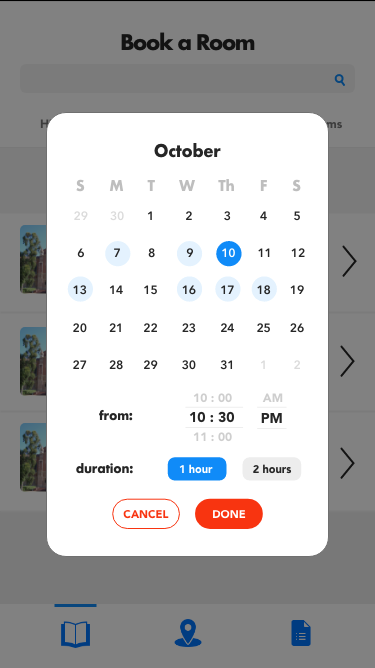
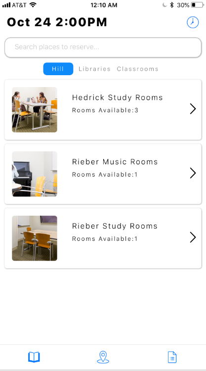
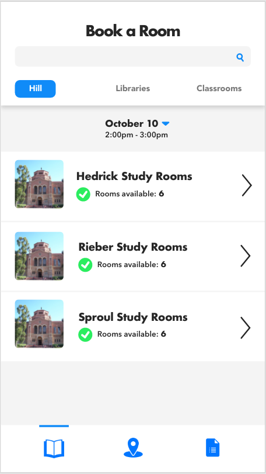
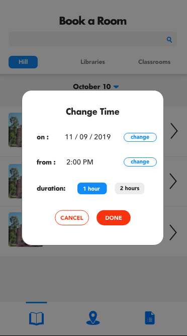

StudySmart App : UI/UX Design
Get instant access to all the info on the best study spots at UCLA. Whether it's a library’s busyness, hours, or reserving a study room, find all the answers in this single app.
OVERVIEW
This past October, I had the privilege of joining one of UCLA DevX’s projects, StudySmart, that aims to launch an app for UCLA students to book study rooms, discover new study spots, and access the location and information regarding all study spots on campus. The app was already almost 2 years in the making, and this quarter I had the opportunity to join as the team’s designer.
TEAM
Dev: Aashita Patwari, Andy Zeff, Anurang Bhuta, Arihant Jain, Arnav Garg, Aseem Sane, Benjamin He, Bradley Mont, Brendon Ng, Brain Chan, Matthew Pineda, Matthew Wang, Shirly Fang
Marketing:
Sanjana Sachdeva
Design: Me
ROLE
As the designer, I was responsible for user-testing, modifying user-flow based on analysis of user-testing data, UI redesign. We had a soft-launch for the app at the end of October, and will be adding features on the dev side and implementing my UX/UI modifications and proposals for our hard launch at the end of the quarter (December 2019).
USER-TESTING
At the time that I joined the team, there was a version of the app that was almost ready to launch. My first task was to perform user-testing and gather feedback on the app’s usability. For this test, I gathered participants within our target demographic (UCLA students ages 18 - 25) and asked them to answer questions and complete a series of tasks. From the data I gathered based on the time to complete the task, user comments while completing the tasks, and visual feedback from users, I was able to direct the team’s attention to our biggest pain-points and the most pressing issues to address and resolve before our hard launch in the coming December. The biggest takeaway was regarding confusion in changing room-booking times.
UI Modifications based on user-testing feedback
For this main issue, users explained that they had difficulty changing the booking date and time for rooms (ex: booking a room for tomorrow at 2pm instead of the default of booking it on the current day for the upcoming hour). Majority of users would glance past the clock icon (that opens a pop-up for time change) and tap around other tabs in the app to look for this feature before eventually arriving back at the original page and seeing it in the top right.

To resolve this issue, I redesigned the time-changing feature by grouping the date and time near the center of the page and added a button that takes users to a pop-up to change the date and time.
 UI REDESIGN
In addition to usability modifications, I also wanted to create a new look for the app. I kept the overall layout of the original app, as there were no issues with it functionality-wise, but wanted to opt for a more modern feel for our young-adult demographic. I went for “Futura” font and stacked cells for a cleaner and minimalist look.
 FEEDBACK
After presenting the first version of my redesign to the team’s engineering lead, she communicated with me that there are limitations on the frontend side and some aspects of my design that would be either too difficult to implement or would take too much time and could not be prioritized over other tasks until next quarter. I understood these limitations and made changes to the designs accordingly to best fit our realistic goals for the hard-launch in December. A few of the changes included:
1) Extending the “search” bar
2) removing the calendar design and time-change features and making it similar to the original design (based on how they coded the time and date selection, the design would need to be this way as of now and the calendar feature would be implemented next quarter)
Original:

Version 1: (to be implemented in the future)
Version 2: (realistic implementation for hard-launch)

I also received feedback on the design from the engineering lead and design peers. Amongst the feedback included removing the dark grey box around unused tabs for “hill”, “libraries”, and “classroom” and evening out the spacing
REFLECTIONS
As my first UX project and one of my first times using HTML/CSS, I ran into a lot of bumps and uncertainties but learned a lot through trial and error and endless Google-ing. Though a challenging process, this was an exciting project to tackle. I learned a lot and discovered a lot of useful resources and how to utilize them. Prior to taking on this project, I had onlybeen exposed to the UX/UI and design worlds for a few months, so this was a great way for me to kickstart my design journey and grow more and more as a designer. Through the feedback from users, I was able to raise my awareness on the blending of colors and become more cautious of my margins. With more experience in the future, I hope to be more creative with my designs and layouts and experiment more with effects using JavaScript.